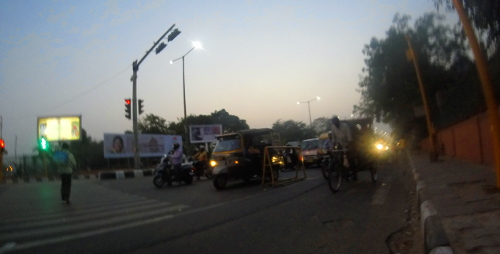

Nov 15

Sep 29
Work was finished reasonably early today, so there was some daylight left for a stroll to Le Jardin du Luxembourgh, a popular hangout for the local population. A bustling place really.
Sep 28
What a luxury: a boulangerie right across the road from my appartment with fresh baguettes and other goodness every morning!
Sep 27
After having been to so many places, this my first visit to Paris (how unbelievable is that!).
A rather long walk from Gare du Nord to Montparnasse brought me straight through the city and also over the 9th bridge in the very center (Pont Neuf). Unfortunately, the Pont des Arts has had all it’s love locks removed because the weight was getting too much. What is left of it now (visible in the back) is rather plain looking and not very artsy… The city is very agreeable though.
Jul 12
With 2, we walked off the campsite at 6.15 in the morning, climbed the mountain until around 10, when we had crossed through very steep bushes on the mountainside, looking for a suitable field for takeoff. The very steep and highly overgrown area we found looked good, so we waited for some thermal activity to start and around 12.30 I took off after a slight struggle with lines and plants, soared up and over the mountain and further to cloudbase around 2400 meters. Very good indeed! Huge birds in the same thermals were also very spectacular.
After about an hour in the pretty strong (+6m/s) thermals, I was getting thirsty and so went for the bar at the Kobarid landing. Another beautiful fight logged and happy I stayed another day.
Jul 11
Only just, but after takeoff from Stoll, only a little bit west brought me over the Italian border again, but this time in the air. Turned around because of a lack of emergency landing sites (only forest), but had a pleasant although bumpy flight over another part of Soca valley.
Jul 10
After another slow start because of some more Easterly wind, the afternoon brought a very good challenge for me and my new German friends: takeoff from Kobala at Tolmin, a ride on the XC-highway over Soca Valley and landing in Kobarid. I am happy to report success! A distance of about 20 kilometers over beautiful terrain and a happy landing next to the bar afterwards. Another brilliant day.
Jul 09
Walked up to the Kuk takeoff (Kobarid, Slovenia) with these two German chaps. It took us from 07.00 to 11.00 (1000 height meters), only to be greeted by gale force winds and a massive Fohn-wall that would not go away during the day. The picture is showing it in all of it’s glory. So, around 5 in the afternoon, we walked down again and were picked up by some another member of the German group of pilots. All in all a nice day, but no flight.
Jul 07
The first trip where I can say that I have started from 7 summits, yeah! The flights over Meduno were a bit short thanks to the unprecedented heat and fitting stable atmosphere, but still a good taste of what is possible in this beautiful area when this is less so. The stability and local micro-climate was also a plus today, because nearby the big clouds were clearly doing what they are good at…
Jul 06
It took many mountain passes (which I prefer to Italian cities) with many many turns, but after about 5 hours of driving I have arrived in Meduno, where time appears to be standing still. Hopefully the bad weather that is going to slash the Alps in the next days will move around Meduno as well (as it often does)…
Jul 05
Two flights today: one glide down to check the landing in smooth conditions (the landing field is surrounded by fruit plantations and has a high-voltage and a telephone line running OVER it + irrigation that was turned on for half the area. Apart from that, it is situated low in a very narrow valley and thus prone to strong winds. Not much room for error…)
The second flight took me up to ridge-height, but just when the Marmolada came into view, I fell out of the thermal and never found it again. Still a nice one, in another arena again!
Jul 04
Flight from another summit today! The flying around Venetberg (near Landeck) was rewarding: 600 meters over launch, with more possible. But Thor made himself known again, so I chickened out and went for the landing after 54 minutes in the air.
Now in Merano (Italy) for the next flights 🙂
Jul 02
Hike & Fly today: Climbed 750 meters to the launch on foot (very hot) and 1200 meters under the glider to an altitude of 3500 meters. Awesome!
Jul 01
The climb tot the launch in the morning:
The leisurely bicycle ride through the mountains in the afternoon:
Jun 30
The picture says it all: awesome. It was hard to get to the 3000 meters, but the view was the best I have seen so far: Wild alpine landscapes as far as the eye can see.
Jun 28
Weather is getting better and better and flying in the Montafon region is very good. Locals sharing every detail are very nice to have; information is never far away. 2 flights from Sennigrat (Hochjoch) today, one in the morning and one in the evening. The problem is that, during the day, it is impossible to land because of the very strong valley wind systems.
Starting areas are very nice and steep, only missing wind dummies…
Jun 26
After a 9 hour drive to Austria, I was in the air by 5 P.M. and a second time around 5.30 thanks to my first toplanding ever on top of the Niedere! The first of many firsts in the next couple of weeks hopefully.
The scene at the launch made me remember bits some bits from my trip last February, for obvious reasons…
May 16
After two days of driving, Bassano gave us our first mountain-flights of the year today. Windy again but pretty good conditions, and the only flyable place around the Alps at the moment.
{kind=link}